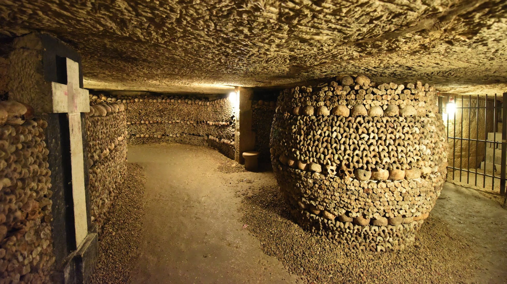

| |
Haunted Places | Paranormal Activities | Exorcisms & Possessions | Social Platforms | Horror Movies | Common Signs | Contact Us |
|---|
The Paris CatacombsTanguy, Paris, France |
The Hidden Side of Paris: A City on Bones
Beneath the lively streets of Paris lies the secret of one of the greatest scandals in its history.

Before bones adorned the walls of the famous Paris Catacombs, there was a cemetery that quite literally collapsed in the heart of the city. Walls cracked under the pressure of death, and even pigs were seen rummaging through human remains. It sounds like fiction—but it really happened
This is the story of the Cemetery of the Innocents, the most haunting place in Parisian history.
The Cemetery of the Innocents and the Medieval Scene No One Talks About
Let’s travel back in time. The Middle Ages. Present-day Les Halles, Place Joachim-du-Bellay. What now seems like just another charming square in the French capital was once the final resting place for thousands of Parisians.
Directly across from the Church of the Holy Innocents, stood the city’s oldest and busiest cemetery.
For centuries, this graveyard, surrounded by high stone walls, received the remains of thousands: ordinary citizens, nobles, victims of the Black Death, martyrs—even unbaptized children, buried in a special corner.
What began as a modest cemetery eventually became a mass grave, and ultimately, a symbol of urban collapse.
Les Innocents became the largest cemetery in Paris. There was no more space for burials, yet the dead kept coming. In a 20-meter-deep pit, up to 1,500 bodies could be crammed. The soil became saturated with decaying corpses, with consequences the city could no longer ignore.
The stench permeated the walls of nearby homes. In warm weather, the air was unbreathable. Residents claimed that diseases seeped from the very ground.
But the most chilling part was yet to come.
The Day It All Collapsed
The year was 1780. Rain had been falling for days. One of the cemetery’s walls gave way. The waterlogged ground could no longer contain the pressure, and part of the wall crumbled to the earth. Along with it, human remains spilled into the basements of neighboring houses.
Skulls, femurs, even flesh-covered bones—death had overflowed.
Residents awoke to find horror in their cellars. In some homes, floodwater mixed with human remains reached knee height. Witnesses described unbearable smells, pigs wallowing in bones, and entire families abandoning their homes in fear of plague.
The Cemetery of the Innocents had long been a public health crisis. But this was the breaking point. Outrage boiled over. It was no longer just an overcrowded burial ground—it had become a threat creeping into the very walls of Paris.
The city had no choice but to act. And quickly.
From Les Innocents to the Catacombs of Paris
The solution was swift—yet just as shocking: the cemetery had to be emptied. But where would the remains of over six million people be taken?
The answer lay beneath the surface.
On the outskirts of 18th-century Paris, there were abandoned limestone quarries, vast tunnels that snaked silently below the city. Cold, dark, and sprawling, these tunnels—now known as the Paris Catacombs—would become the new resting place for the dead.
From 1785 to 1787, black-covered wagons rolled through the city at night. By torchlight, workers exhumed bones, cleaned them, and loaded them into carts bound for the catacombs.
Initially, the bones were piled chaotically. But in 1810, French engineer Louis-Étienne François Héricart de Thury transformed the catacombs forever. His renovation turned the disordered tunnels into a structured underground mausoleum, now known as the largest grave in the world.
Skulls were aligned, femurs arranged into walls, and symmetrical rows gave form to the formerly unthinkable. In every alcove, inscriptions marked the cemetery of origin and the year of transfer.
What began as a public health measure became one of the most iconic ossuaries in the world—a place that preserves not just human remains, but the memory of a Paris that buried its problems—literally—underground.
A Square and a Fountain That Remember the Lost Cemetery
Today, the site where the Cemetery of the Innocents once stood is now a lively square lined with shops, cafés, and bistros.
At its center stands a monumental 16th-century fountain—the oldest in Paris—commemorating this dark chapter in the city’s story.
Because in a city that thrives on light, there is also a hidden Paris: deep, haunting, and impossible to conceal. A Paris of plagues and collapse, of desperate measures and grim resolve. But also of memory, dignity, and our enduring respect for the dead.
Beyond The Veil |
||
|---|---|---|
|
Explore the unexplained and discover mysteries that challenge the ordinary. |
||
|
||
|
|